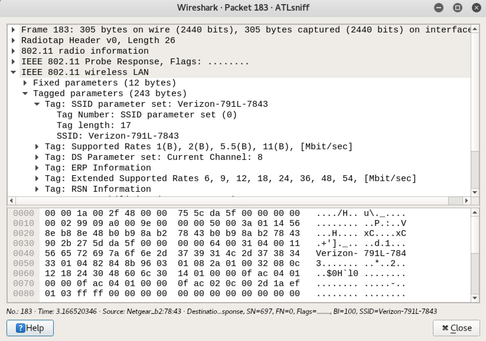

Hardware:
Most computers are sold with an integrated wireless internet chip. A wireless chip replaced the previously used Ethernet cable. This switch to chips allowed data to propagate through the air instead of through wires. The integrated wireless chip is listening to every packet comming through the network. The software in this chip filters the data and deletes any data not addressed to itself. With an external wireless internet chip that can be purchased online a user, like you and me, can sift through all the data propagating on the same wireless network.
Some of this data is encrypted. Some of this data is not. HTTPS is a common web protocol. The 'S' stands for secure, meaning its encrypted. HTTP is very similar but its missing the 'S'. When sniffing for packets HTTP is a target that may give some good information.
Wireshark
Wireshark is an application that displays all packets picked up on the network. This is an example of a packet I sniffed off the Atlanta airport free and open Wi-Fi network. There are numerous packets sent through the air at any given moment. Most of these packets hold no interesting or telling data. Finding sensitive information this way is like trying to locate a needle in a haystack. People can protect themselves by always using HTTPS protocol for web browsing instead of HTTPS. Connecting to unfamiliar networks should be avoided. When using an open network, which is sometimes a necessary evil, I connect to the University of Florida’s virtual private network. Using a VPN makes your packets more secure.
For the privacy of others, I will not disclose any of the data I found
I looked into editing the software on my integrated wireless chip because I want to flip it into monitor mode. Moditor mode means it doesnt instantly delete all packets intended for other devices. I am pretty sure the software cannot be altered without physical access to the chip. I will not crack my computer open to start messing with the chip. I would, without a doubt, break my computer beyond repair.
Readings